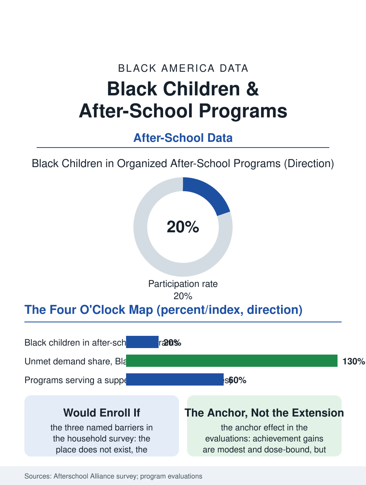

Black Education
Four O'Clock: Black Children and After-School Programs
Participation at the average, unmet demand above it, and the darkened school where the grant lapsed: the four o'clock file. The after-school file.

The hours between the school bell and the parent's return from work are the working family's daily equation, and the after-school system's data describe its solution's distribution: Black children participate in organized after-school programs at rates near the national average, while the unmet demand, the children the parents say would enroll if a place existed, concentrates in exactly the communities the programs are thinnest. This article reads the after-school file.
Demand, Measured and Unmet
The Afterschool Alliance's household survey, the file's standard source, counts the participation and the demand in the same instrument: roughly one in five American children in an organized program, with Black children's participation at the average, a figure built substantially on the public and subsidized tier, the school-based and parks programs, against the private enrichment market's distribution. The unmet demand is the file's headline: the parents of millions of children, disproportionately the Black and low-income parents of the survey's splits, report a child who would participate if the program existed, were affordable, or ran on the schedule the work file requires, the three barriers naming the system's exact failure modes, supply, price, and the clock. The self-care file is the demand's shadow: the children alone in those hours, the latchkey population whose count the surveys estimate with difficulty, distribute by the same variables, the parent's shift and the neighborhood's program map, with the research literature on the unsupervised hours' risks, the injury and the juvenile system's afternoon peak in its statistics, giving the after-school investment its public safety brief in the data the advocates cite. The transportation home is the program's last mile in the literal sense, the late bus being the difference between the enrolled child and the attending one in the districts whose routes end with the school day, and the programs that solved it, by the district's late run or the program's own vans, post the attendance the others' brochures promise, another of the file's logistics wearing the costume of an outcome.
The Program's Contents
What fills the hours divides the file's tiers: the academic extension, the tutoring and homework infrastructure of the achievement files, the enrichment tier of the arts and sports files, and the supervision tier whose honest product is the safe room and the meal, the supper program's expansion in the federal child nutrition data being the file's quiet giant, the after-school meal now served in the millions in the high-poverty sites. The evidence's center is the attendance finding: the programs' effects on the achievement measures are modest and dose-dependent in the evaluations, while the effects on the attendance and behavior of the regular participant are the consistent result, the program functioning as the school day's anchor rather than its extension for the student the engagement file worries about. The funding stack, the federal 21st Century program's billion-plus against the estimated need's multiple, the state and city systems of the large metros, the philanthropy's place-based bets, composes the supply map whose holes the unmet demand surveys keep redrawing in the same districts, the grant cycle's instability being itself a supply variable, the program that closes in the funding's gap year losing the staff and the trust the restart must rebuild.
The Four O'Clock Economy
The after-school file closes on the hours' economic meaning for the family, because the program is labor market infrastructure in the strictest sense: the parent's shift is takeable only against the child's coverage, and the coverage's map is therefore part of the employment file's geography, the warehouse's second shift and the hospital's evening rotation assuming the program the neighborhood may not have. The older child's version, the middle schooler's program cliff, where the offerings thin precisely as the supervision's need is officially denied by the age's fiction of independence, is the file's recognized frontier, the youth programs of the sports and arts files carrying the load the after-school system sets down. The survey counts the participants and the waiting parents in the millions each cycle. The file's last entry is the gym's and the library's light at four, in the neighborhoods where the program exists, and the darkened school in the ones where it does not, the same building, the same children, the funding file's difference rendered in the afternoon's plainest terms, which the working parent reads, at the shift's start, as the whole of the matter.
More in Black Education
Black Educational Attainment: High School Parity, the College Gap
About 89 percent of Black adults hold a high school diploma and one in four holds a bachelor's degree or higher — the attainment ladder, the college completion gap, and the generational trend.
Historically Black Colleges and Universities: Enrollment and Degrees
More than 100 HBCUs enroll roughly 290,000 students and award about one in six Black bachelor's degrees — an outsized share from a small sector. The federal education data.
Black College Enrollment: 2.4 Million Students
About 2.4 million Black students are enrolled in American colleges — nearly two-thirds of them women. The NCES enrollment data by sector, level, and trend.
Source: Afterschool Alliance, America After 3PM household survey; 21st Century Community Learning Centers evaluations.